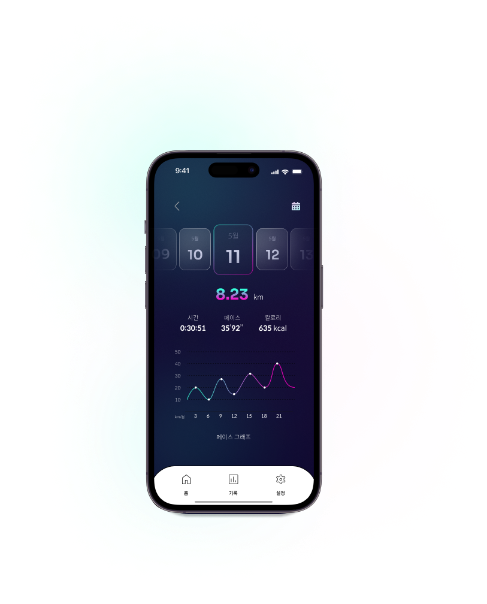

Application UI/UX Redesign
happyrun
period : 2023.04.24 ~ 2023.06.01
team project (4 members)
목표 설정 · 타이머 · 기록 저장 · 음성 안내 기능이 있는 달리기 기록 어플

목표 설정 · 타이머 · 기록 저장 · 음성 안내 기능이 있는 달리기 기록 어플
팀명 : Flex 해조
팀원 : 이수빈, 안소영, 정희경, 김평우
담당 업무 : 경쟁사 분석, Wireframem, Prototype, 앱에 사용할 아이콘 제작, PPT 제작 및 발표
프로젝트 기간 : 2023.04.24 ~ 2023.06.01
프로젝트 목표 : 직관적인 디자인이 부족하고 편리성이 떨어지는 달리기 어플 UI 디자인